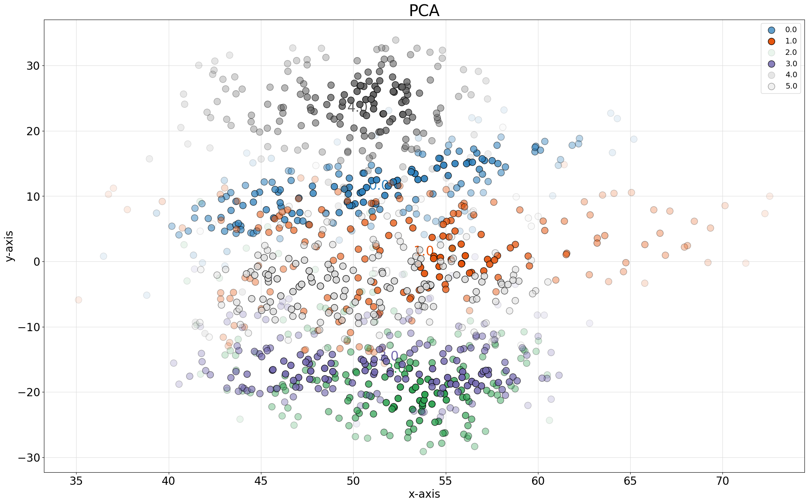
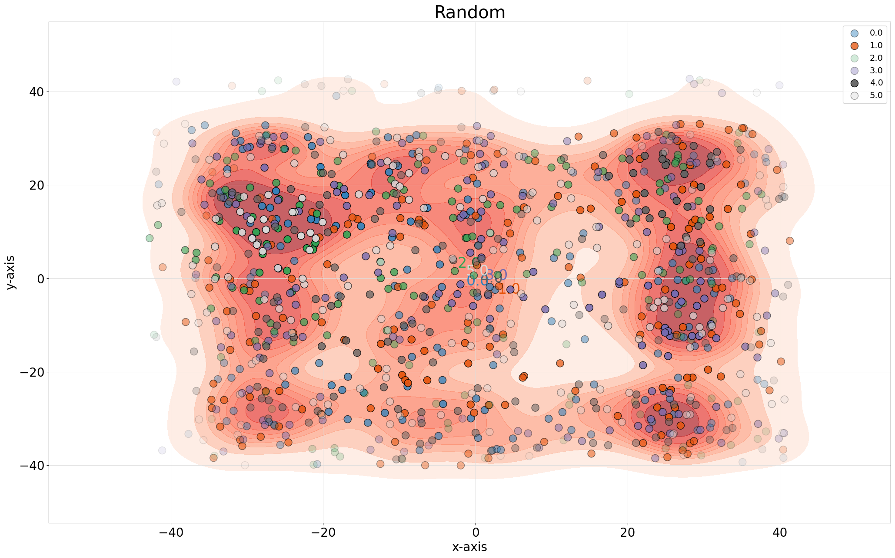

Comparison high dimensional embedding: PCA vs tSNE
In the following example we load the mnist dataset and make a PCA and tSNE embedding for which we will analyze the distribution of samples in the embedding. The comparison between the top 50D of PCA vs. 2D tSNE resulted in high similarities on local and global scales. The axis are the number of “neirest neighbors” (nn). What we see is that on local scales (low nn) high similarity is seen between the maps but also in higher scales.
# Load libraries
from sklearn import (manifold, decomposition)
import pandas as pd
import numpy as np
# Import library
import flameplot as flameplot
# Load mnist example data
X,y = flameplot.import_example()
# PCA: 50 PCs
X_pca_50 = decomposition.TruncatedSVD(n_components=50).fit_transform(X)
# tSNE: 2D
X_tsne = manifold.TSNE(n_components=2, init='pca').fit_transform(X)
# Compare PCA(50) vs. tSNE
scores = flameplot.compare(X_pca_50, X_tsne, n_steps=5)
# Plot
fig = flameplot.plot(scores1, xlabel='PCA (50d)', ylabel='tSNE (2d)')
|

Comparison 2D embeddings: PCA vs tSNE
The comparison between the top 2D of PCA vs. 2D tSNE resulted in much lower similarities compared to the 50D on local and global scales. What we see is that on local scales (low nn) there is low similarity which depicts that samples have different neighbors. On larger scale it becomes a bit more greenish and slightly more similarities are seen on average between the neighbors. This would basically suggest that the same digits are detected globally but are differently ordered on local scales.
# PCA top 2 PCs
X_pca_2 = decomposition.TruncatedSVD(n_components=2).fit_transform(X)
# tSNE
X_tsne = manifold.TSNE(n_components=2, init='pca').fit_transform(X)
# Compare PCA(2) vs. tSNE
scores = flameplot.compare(X_pca_2, X_tsne, n_steps=5)
# Plot
fig = flameplot.plot(scores, xlabel='PCA (2d)', ylabel='tSNE (2d)')
Comparison Random data vs. t-SNE
The comparison between the Random data points vs. 2D tSNE resulted in low similarities on both local and global scales. This what we expect to see as we permuted the data.
# Random
X_rand=np.c_[np.random.permutation(X_tsne[:,0]), np.random.permutation(X_tsne[:,1])]
# Compare random vs. tSNE
scores = flameplot.compare(X_rand, X_tsne, n_steps=5)
# Plot
fig = flameplot.plot(scores, xlabel='Random (2d)', ylabel='tSNE (2d)')
Scatterplots
Scatter plots can also being created:
# Create scatterplot of PCA
flameplot.scatter(X_pca_2[:,0], X_pca_2[:,1], labels=y, title='PCA', density=False)
# Create scatterplot of t-SNE
flameplot.scatter(X_tsne[:,0], X_tsne[:,1], labels=y, title='tSNE')
# Create scatterplot of the random data
flameplot.scatter(X_rand[:,0], X_rand[:,1], labels=y, title='Random')
 |
|
 |